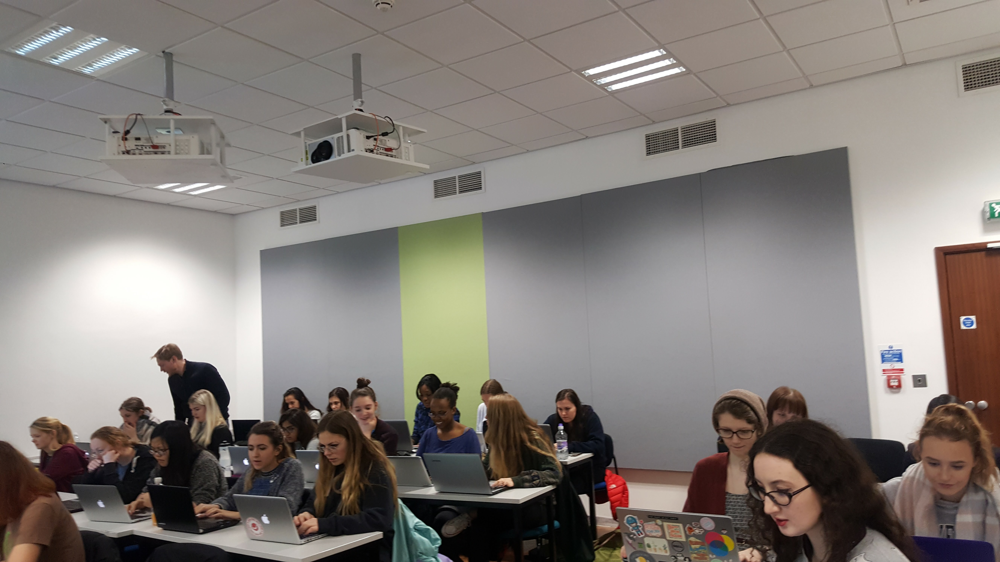

Sheffield Code First:girls

Anyone working on any STEM area knows, as a fact, that we are facing a digital and technical skills gap. In the governement's digital strategy report last year it was highlighted that we would need an extra 745,000 workers with digital skills by 2017, as 90% of jobs require digital skills to some degree. On top of this, many technical areas suffer a diversity deficit (cultural and gender based). With the UK being among the European countries with the smaller number of female professionals in STEM areas.
Being this a rather complex problem, many people and organisations work hard to provide a solution to this issue. Some approaches adopted by such individuals and organisations are:
- Encourage the hiring of highly skilled immigrants
- Provide wider support for underrepresented minorities
- Leverage inclusive and encouraging environments for those who demonstrate an interest in STEM areas
- Support and train those willing to make a career change/or follow non-traditonal career paths
- Approach the new generations and provide them with useful skills that would help them make an informed career choice
... and the list goes on.
I do believe, however, that the most fruitful approach is to work with the upcoming generations and provide them with useful technical and personal skills early on. This would not only make them better qualified for their future but would enable them to make informed decisions with regards to their professional future.
Code First: girls is a multi-award organization that aims to tackle the gender imbalance in three ways: training women, building a strong and supportive community, and helping companies to train, recruit, and retain their female force.
Belonging to a minority within STEM has lead me to take an active role as an equality and diversity ambassador, which eventually lead me to volunteer as a Python instructor for the Code First courses.
Over the course of 8 weeks we teach and guide groups of around 30 women with various levels of coding experience in CSS/HTML, Python, or Ruby. These courses are a mixture of in-person classes and self-learning, at the same time the ladies involved work in teams of 2-4 people to build a project of their own interest.

The idea behind these workshops is rather simple: train people and provide them with practical use of the skills they are learning. Having as a final objective to develop a fully deployed RESTful app. But the whole CF:girls thing goes way beyond that. Over those 8 weeks the girls form a strong, motivating, and supportive community, in which they can acquire new skills, meet like-minded people, learn from other women working in STEM areas, and even attend external women in tech events!

I find rather interesting the mixture of apps and projects pursued, as well as the high quality of the presented final products. But beyond that, I find this to be an excellent opportunity to give back to the amazing community that has adopted and welcome me as a professional in a STEM area. Thus I can say for sure I will be getting involved in more Code First events/workshops.